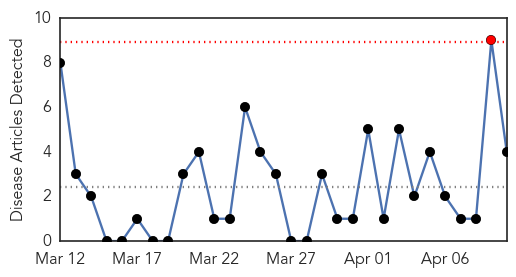
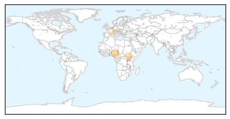

Mold/Fungal
30-Day Web Trend
7 alerts, 0 warnings

30-Day Twitter Trend
0 alerts, 0 warnings

Article Locations

Article Confidences

Top Articles:
- 0.806
- LONG WINTER COULD MAKE FOR A MISERABLE SPRING
- 0.719
- Deadly bat disease found in Wisconsin, Michigan -wildlife officials
- 0.637
- Deadly bat disease found in Wisconsin, Michigan -wildlife officials
- 0.623
- Deadly bat disease found in Wisconsin, Michigan -wildlife officials
- 0.622
- Fungal Disease Fatal To Bats Killed Millions In North America, Spreading In U.S.
Top Tweets:
-
No tweets found for Apr 10, 2014
Cholera
30-Day Web Trend
1 alerts, 0 warnings

30-Day Twitter Trend
4 alerts, 0 warnings

Article Locations
Article Confidences

Top Articles:
Top Tweets:
- 0.904
- Guinea had large cholera outbreak in 2012- time to place on the map for many reasons besides ebola http://t.co/6XSJ7hf9dm